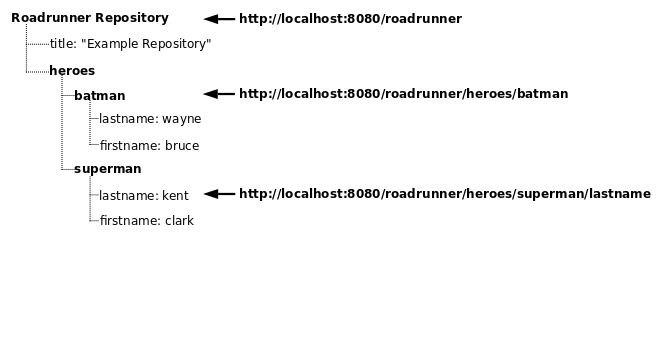

Simply put the helium.war into the webapps folder of your Apache Tomcat v7.0.3x. Afterwards helium.io will be available to your under http://localhost:8080/helium.io
You can also use the vertx standalone variant of helium.
java -jar helium.io-standalone.jar -url http://localhost:8080/helium.io
Simply include the JavaScript library in the <head> tag of your web page.
<script type='text/javascript' src='http://localhost:8080/helium.io/helium.js'></script>Finally, create a Helium.io reference using the URL to your Helium.io Repository and start using your data:
var myRootRef = new Helium.io('http://localhost:8080/helium.io');
myRootRef.set('Beep, Beep');You can use any Helium.io URL as a REST endpoint.
Here we read some data from the root of our Helium.io:
curl http://localhost:8080/helium.ioNext, we write data at some data inside the repository:
curl -X PUT -d "\"Beep, Beep\"" http://localhost:8080/helium.iohttp://localhost:8080/helium.io/sample-chatEvery data node inside a Helium.io repository is addressable by URL. For example, here's a depiction of a Simple Helium.io Repository with a title and two heroes:

These URLs that point to data are called locations. At a location inside a Helium.io Repository you can store strings, numbers, booleans, or nested children. To store data hierarchically you should use nested children. For example, our simple example has a list of heroes, which are located at:
http://localhost:8080/helium.io/heroesThe data for 'superman' and 'batman' are stored at these nested locations:
http://localhost:8080/helium.io/heroes/batman
http://localhost:8080/helium.io/heroes/supermanIn our example, 'batman' and 'superman' are children of 'heroes', and 'heroes' is the parent of 'batman' and 'superman'.
Please note a location can either contain data (a string, number, or boolean) or a nested node, but not both.
Locations for data can nest as deeply as you like. For example, the last name for user 'batman' is located at:
http://localhost:8080/helium.io/heroes/batman/lastnameBefore doing any operations on your Helium.io repository, you need a Helium.io reference, which is a pointer to data inside your Helium.io repository.
You create a Helium.io reference by specifying the URL of the data you would like to access:
var sampleRef = new Helium.io('http://localhost:8080/helium.io');Creating a Helium.io reference is an extremely light-weight operation, so you can create as many as you like without worrying about wasting bandwidth or memory.
Since references are created so often in Helium.io applications, there are a couple of helper functions to make constructing them easier.
First, each reference has a function that takes the path to a child and returns a reference pointing to that child location:
var childRef = sampleRef.child('heroes');
// This is equivalent to:
var childRef = new Helium.io('http://localhost:8080/helium.io/heroes');Second, each reference has a function that returns a reference to its parent location. For example:
var parentRef = childRef.parent();
// parentRef and sampleRef now point to the same location.Here are several ways of creating a reference that points to the same Helium.io location:
heroesRef = sampleRef.child('heroes');
batmanRef = heroesRef.child('batman');
// is equivalent to:
batmanRef = sampleRef.child('heroes/batman');
messageListRef = batmanRef.parent().parent().child('message_list');
// is equivalent to:
messageListRef = new Helium.io('http://localhost:8080/helium.io/message_list');Once you have a Helium.io reference, you can use it to read, write, and query data at that location using the other Helium.io API functions.
The basic Helium.io write operation is a "set", which overwrites any data at the specified location. The example below demonstrates setting the first and last names of hero 'batman'.
// First we get a reference to the location of the heroe's data:
var nameRef = new Helium.io('http://localhost:8080/helium.io/heroes/batman');
// And then we write data to his first and last name locations:
nameRef.child('firstname').set('Bruce');
nameRef.child('lastname').set('Wayne');In addition to strings, you can write booleans, numbers, and objects to any Helium.io location. When a javascript object is written, the object properties are automatically mapped to Helium.io child locations in a nested fashion: "foo.bar" maps to the child "foo/bar", "foo.bar.baz" maps to the child "foo/bar/baz" and so on. For example, the code below sets the first and last name of user 'fred', just as the previous code example did:
nameRef.set({firstname : 'Bruce', lastname : 'Wayne}); The above two examples ― writing the first and last name separately and writing them at the same time as an object ― will result in the same data being saved to your Helium. The set operation will overwrite
If you want to write multiple children of a Helium.io location at the same time without overwriting other existing data, you can perform an "update" operation as shown:
nameRef.update({firstname : 'Bruce', lastname : 'Wayne'});Helium.io provides a helper function which automates the generation of unique child names. This function is called push( ) in JavaScript. By using unique child names for each write, many clients can append children to the same location at the same time without fear of conflicts.
Here is an example:
// Generate a reference to a new location with push
var newPushRef = listRef.push();
// Set some data to the generated location
newPushRef.set({user_id: 'wilma', text: 'Hello'});
// Get the name generated by push
var pushedName = newPushRef.name();When push( ) with no arguments is called, it returns a Helium.io reference. You can then use this reference to do any of the usual Helium.io operations, such as getting its name or setting data to it.
In JavaScript, the pattern of calling push( ) and then immediately calling set( ) is so common that we let you combine them by just passing the data to be set directly to push( ) as follows:
// These two methods are equivalent
listRef.push().set({user_id: 'wilma', text: 'Hello'});
listRef.push({user_id: 'wilma', text: 'Hello'});Because Helium.io allows real-time data access, data is never read synchronously. Instead, you read data by attaching a callback to a Helium.io reference as shown:
var dataRef = new Helium.io('http://localhost:8080/helium.io/heroes/batman/firstname');
dataRef.on('value', function(snapshot) {
alert('batman’s first name is ' + snapshot.val());
});Callbacks are triggered both for the initial state of your data and again any time data changes. In the above example, the callback will be called again if Batman's first name ever changes.
Callbacks receive snapshots of data. A snapshot is a wrapper that holds the data of a specific location.
There are 4 event types for which you can attach callbacks:
Helium.io only distributes the changes to the client that the client has event listeners attached to.